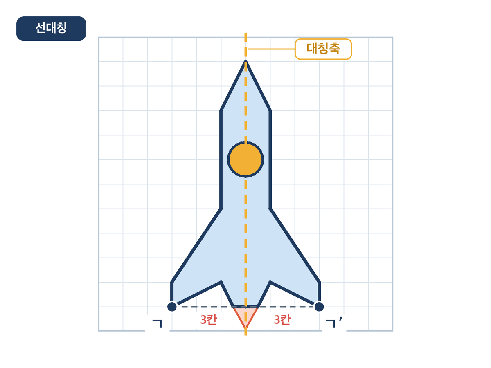
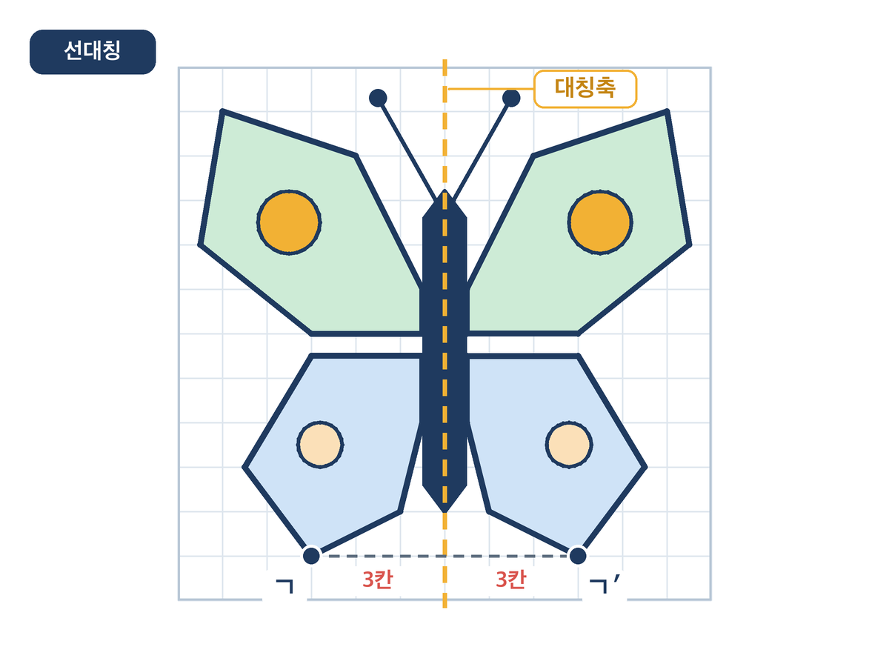
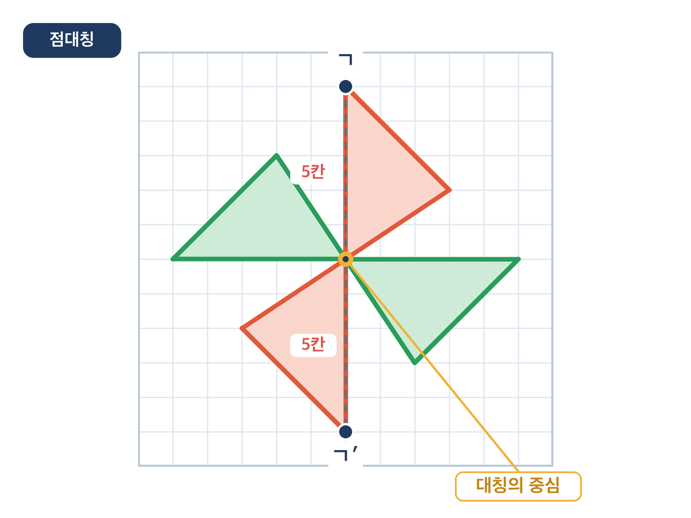
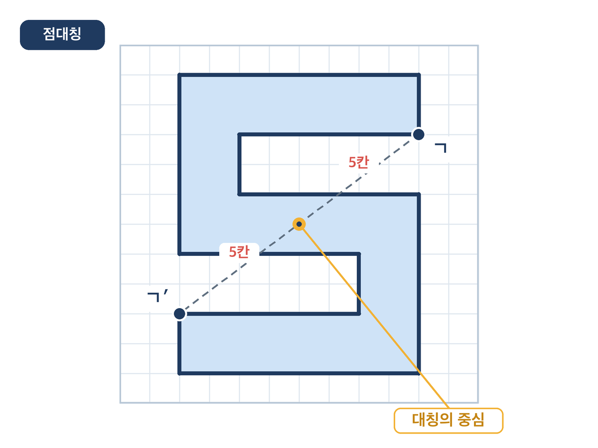

5편 · 대칭 디자이너 — 단원 정리, 대칭으로 나를 표현하기
비상 수학 5-2 3단원 합동과 대칭 · 단원 정리 + 창의가 반짝(교과서 74쪽) · 40분 · 2026-10-28 게시
점대칭 그림판 열기 →선택 자료 · 디자인을 그리기 전에 미리 시험해 봐요. '대칭' 버튼으로 세로 → 가로 → 점대칭 · 로그인 없음 · 아무것도 저장하지 않음
학습 목표
- 합동·선대칭도형·점대칭도형의 뜻과 성질을 한 줄씩 말할 수 있다.
- 선대칭 또는 점대칭이 되는 나만의 디자인을 격자에 그리고, 대칭축(또는 대칭의 중심)과 대응점 한 쌍을 표시해 수학 용어로 설명할 수 있다.
설계 의도
단원의 마지막은 평가로 끝나기 쉽습니다. 이 수업은 평가(AIDT 단원 평가)는 10분으로 줄이고, 나머지를 자기 표현에 씁니다. 교과서 74쪽은 '그림으로 나를 표현해 볼까요?'를 제안하는데, 그냥 그리면 미술이 됩니다. 여기서는 "내 디자인이 선대칭인지 점대칭인지, 대칭축(중심)은 어디인지, 대응점 한 쌍은 어디인지"를 수학 용어로 세 줄 쓰는 것을 작품의 일부로 만듭니다. 그림은 아이가 고르고, 설명은 단원의 성질이 채웁니다.
AI의 자리는 글쓰기 보조입니다. 아이가 쓴 수학 설명 세 줄을 교사가 제미나이에 넣어 '작품 소개문 두 문장'으로 다듬는 시범을 한 번 보이고, 모둠마다 한 편씩 다듬어 갤러리 카드로 붙입니다. 아이 이름·얼굴은 넣지 않고 작품 번호로만 겁니다. 학생은 AI 계정이 필요 없습니다.
1~5편에서 AI의 자리는 이렇게 옮겨 갔습니다. 1편(합동 탐정)에서 AI는 문제를 만들어 주는 상대였고, 2편(오류 진단)에서는 틀릴 수 있는 상대, 3편(거울 그림판)에서는 교사의 도구를 만들어 주는 상대, 4편(문제 출제단)에서는 출제를 돕지만 검토는 사람이 하는 상대, 5편에서는 아이의 말을 다듬어 주는 상대입니다. 다섯 편 모두 학생은 AI 계정 없이, 개인정보 없이 참여했고, 그림은 코드로 정확히 그렸습니다. AI를 '정답 기계'가 아니라 역할이 바뀌는 상대로 다루는 것이 이 꾸러미의 일관된 설계입니다.
40분 흐름
| 분 | 단계 | 교사 | 학생 | 자료 |
|---|---|---|---|---|
| 0~5 | 도입 돌아보기 퀴즈 4문항 | ① 합동인 짝 고르기 ② 합동이면 대응변의 길이는? ③ 정사각형의 대칭축은 몇 개? ④ 대응점을 이은 선분은 대칭의 ___을 지난다 (한 장에 한 문항, 답은 발표자 노트에) | 손들기·한 단어 답 | 덱 2~5장 |
| 5~15 | 평가 AIDT 단원 평가 | AIDT 3단원 단원 평가 문항 풀기(10분). 끝난 학생은 활동지 뒷면 '단원 정리 표'부터 | 개별 평가 | 비상 AIDT, 활동지 뒷면 |
| 15~35 | 활동 대칭 디자이너 | ① 디자인(10분): 활동지 앞면 (가) 세로 대칭축 / (나) 대칭의 중심 중 하나를 골라 '나를 나타내는 것'(이름·얼굴 금지)을 반쪽 그리고 규칙대로 완성. ② 수학 설명 3줄(5분). ③ 교사 시범 + 갤러리 워크(5분): 한 작품의 세 줄을 제미나이로 소개문 두 문장으로 다듬는 시범 → 작품을 번호로 걸고 포스트잇에 "수학적으로 맞는 점 하나" | 그리기·설명 쓰기·갤러리 워크 | 활동지, 색연필, 포스트잇, (선택) 점대칭 그림판 |
| 35~40 | 정리 단원 한 줄 + 예고 | 합동·선대칭도형·점대칭도형을 한 줄씩. 4단원 '소수의 곱셈' 예고 | 한 줄 정리 | 덱 |
내려받기
- 수업 덱 (PPTX)12장 · 고쳐 쓰기용 · 발표자 노트
- 수업 덱 (PDF)12장 · 바로 띄우기용
- 활동지 (PDF)A4 앞뒤 · 학생당 1장 · 번호만
- 교사용 흐름 (PDF)흐름표 · 퀴즈 정답 · 프롬프트 · 갤러리 운영
제미나이 프롬프트 카드 (교사용 · 작품 소개문 다듬기)
프롬프트 (학생 글 세 줄과 함께 붙여 넣기)
초등학교 5학년 학생이 자기 대칭 디자인에 대해 쓴 수학 설명 세 줄이야. 뜻은 그대로 두고, 전시회 작품 소개문처럼 두 문장으로 다듬어 줘. 수학 용어(선대칭도형·점대칭도형·대칭축·대칭의 중심·대응점)는 바꾸지 말고, 새 내용을 보태지 마. 학생 이름은 없으니 '이 작품은'으로 시작해 줘. [세 줄 붙여 넣기]
교사만 사용합니다. 학생 이름·반 정보는 넣지 않습니다. 다듬은 문장이 원래 뜻과 다르면 학생 글을 우선합니다 — "AI는 내 말을 예쁘게 해 줄 뿐, 수학은 내가 맞혀야 한다".
작품 예시
네 작품 모두 반쪽 좌표만 정하고, 나머지는 좌표를 실제로 대칭축에 대해 반사하거나 대칭의 중심으로 180° 돌려 그렸습니다. 주황 점선은 대칭축, 주황 점은 대칭의 중심, ㄱ·ㄱ′는 대응점 한 쌍입니다.



